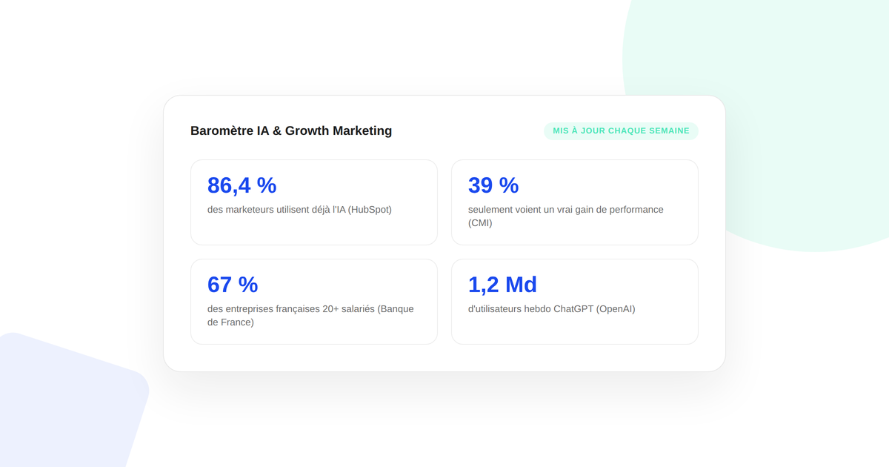

Baromètre IA & Growth Marketing
L'adoption de l'IA dans les équipes marketing et growth, en chiffres sourcés et recoupés — pas une liste de statistiques décontextualisées, mais une lecture croisée entre ce que les équipes adoptent, ce qu'elles en mesurent vraiment, et ce que ça change pour la visibilité dans les moteurs de recherche génératifs.

- Dernière mise à jour
- 4 octobre 2026
- Rythme de mise à jour
- Chaque lundi matin
- Sources suivies
- 8 études et annonces officielles
Adoption : où en sont vraiment les équipes
Le chiffre le plus utile ici n'est pas le plus haut, c'est l'écart entre eux : en France, l'adoption grimpe nettement avec la taille de l'entreprise (64 % à 20-49 salariés contre 83 % à 1 000+), ce qui suggère un effet de moyens et de structure bien plus qu'un effet de secteur.
L'écart entre adoption et résultats réels
C'est le recoupement le plus parlant de ce baromètre : une adoption massive ne garantit pas un résultat mesurable. Trois études indépendantes, sur des terrains différents (B2B mondial, entreprises françaises, marketeurs généralistes), arrivent au même constat.
Quand ça marche vraiment : l'impact mesuré
Visibilité et recherche via IA générative
Ces volumes contextualisent l'enjeu du GEO : la bascule d'une partie des recherches vers des interfaces conversationnelles n'est plus marginale.
Côté usage professionnel, l'Anthropic Economic Index (rapport « Cadences », 26 juin 2026, ~9 700 répondants dont les réponses sont liées à leur usage réel de Claude) place le contenu marketing et la correspondance professionnelle parmi les usages dominants en semaine, aux côtés de la préparation de présentations — un signal direct que l'IA générative s'est installée dans le quotidien des équipes marketing, pas seulement dans leurs intentions déclarées.
FAQ
D'où viennent les chiffres de ce baromètre ?
Uniquement d'études et de communications officielles, nommées et datées : rapports de HubSpot, Salesforce, Content Marketing Institute, Banque de France, Ifop, Anthropic, et annonces officielles d'OpenAI et de Google. Chaque chiffre est lié à sa source directe. Aucune statistique n'est inventée, arrondie de façon trompeuse ou reprise d'un site qui lui-même ne cite pas de source primaire.
À quelle fréquence ce baromètre est-il mis à jour ?
Chaque lundi matin, par une vérification manuelle des sources déjà citées et une recherche de nouvelles études significatives. Un chiffre n'est changé que si une étude plus récente le remplace réellement — jamais par simple habitude de mise à jour.
Pourquoi certains chiffres se contredisent-ils entre deux études ?
Parce que les méthodologies diffèrent : taille et pays de l'échantillon, définition de "utiliser l'IA", période de collecte. C'est pour cette raison que chaque chiffre reste attribué à son étude d'origine plutôt que présenté comme une vérité unique et universelle.
Envie de transformer ces chiffres en plan d'action pour votre site ?
Pour aller plus loin, voir la page GEO, l'audit de visibilité IA, et le guide MCP Marketing.
À lire aussi : Le guide complet GEO pour ranker numéro 1 dans les LLMs.
Pour continuer sur ce sujet.